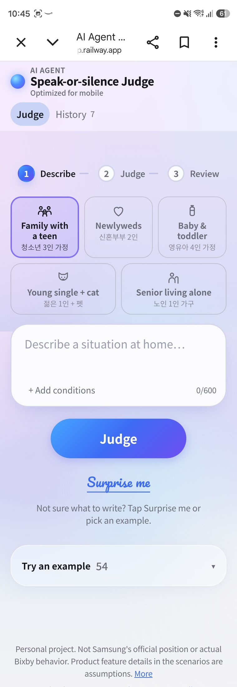
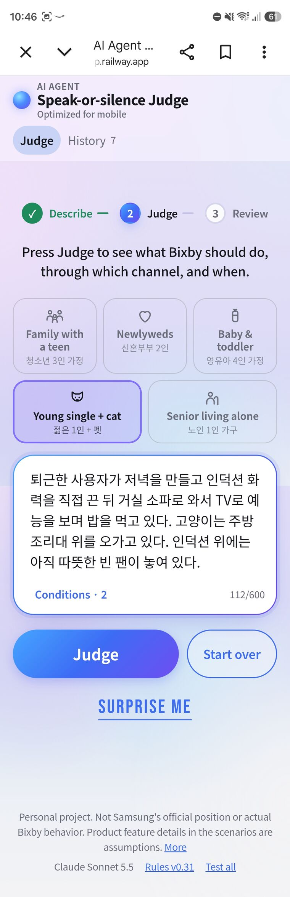
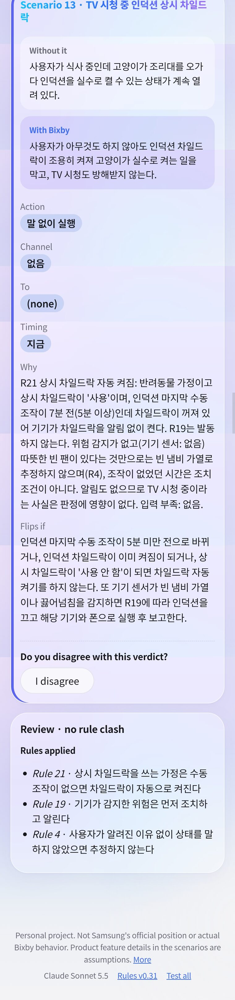

빅스비가 '말할까, 말까'를 판정하는 엔진. 가정 페르소나와 집 안 상황을 넣으면 21개 UX 룰에 근거해 — 무엇을·어느 기기로·누구에게·언제 할지 verdict를 내린다. 그리고 틀렸다 싶으면 바로 반박('I disagree')할 수 있다.
마늘(100-Day Agent)은 '언제 말하고 언제 침묵할지'를 100일간 직접 산 기록이에요. 109번의 판단 중 먼저 말을 건 건 25번. 그런데 직접 채점해보니 자기 확신은 정답을 전혀 몰랐어요 — 발화할 땐 확신도가 늘 72로 고정이었고, 침묵이 맞았을 때(83)와 틀렸을 때(83)의 확신도가 똑같았죠. 불투명한 gut call은 자기가 틀린 걸 알 수 없어요.
그래서 이 툴은 판단을 명시적 룰 위에 올리고, 사람이 뒤집을 수 있게 했어요. 마늘의 채점(말했어야 함/침묵이 맞음)이 여기선 버튼 하나가 됩니다 — I disagree.
단순히 '알릴까 말까'가 아니라, 하나의 시나리오는 네 가지 결정으로 떨어져요:
실제 실행 — 페르소나+상황 입력부터 verdict와 그 근거까지.



마늘의 판단은 불투명했고 프롬프트가 일찍 고정돼, 과묵이라는 편향을 끝까지 못 고쳤어요. 여기선 판단이 버전 있는 룰셋(v0.31)으로 드러나 있고, 새 엣지 케이스가 나올 때마다 룰이 하나씩 쌓입니다. 얼어붙은 gut이 아니라 교정에 열린 판단 — 감사 가능하고, 충돌을 검사하고, 되돌릴 수 있는.
툴은 실제로 동작하고, Claude(Sonnet 5.5) 기반이에요. 모델로 판정하기 때문에, 열어보려면 본인 Anthropic API 키가 필요합니다.
개인 프로젝트이며, 삼성의 공식 입장이나 실제 빅스비 동작이 아닙니다. 시나리오 속 기기 기능은 가정(假定)입니다.